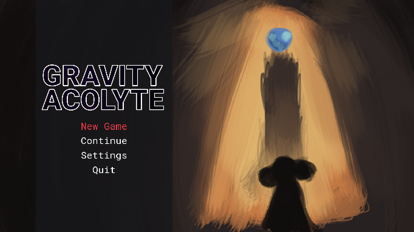

The acolyte creeps through the underbrush. They have been traveling for days without food, drink, or rest; those metabolic processes long since superseded by an array of charms, trinkets, and runic tattoos.
As dark clouds roll loom on the horizon, threatening an oncoming storm, they enter a rank and crumbling tunnel. Continuing into the darkness the ancient brickwork gives way to cracked concrete made slick by sunless lichens. Descending, descending, the acolyte sweeps every forwards into the abyss. In time their dark adjusted eyes are stung by the quiet light of candles. Acidic smoke similarly invades their nose, and the sound of blood in their ears is replaced by a deep and ancient hum. Dust hangs in the air, as if unaffected by gravity, and overhead crumbling walkways hover unsupported.
The acolyte continues forwards
Gravity Acolyte is my submission to the Acerola Jam #0. It is a fast paced 2d collection platformer, mainly inspired by Celeste and STALKER. The game was made in under two weeks, and personally I think it is probably my best jam game.
Going in to the jam, I knew I wanted to make an action game. I had recently seen some tutorials on attack animations by Penusbmic and wanted to try out some of the techniques I had gathered.
The theme went live at 6:00PM in my time zone, so I was able to get to brainstorming straight away. The theme, "Aberration", was an open ended one.
ab·er·ra·tion
/ˌabəˈrāSH(ə)n/
noun
a departure from what is normal, usual, or expected, typically one that is unwelcome.
I find that game jam themes come in two categories, either they are so specific that only really one type of game can come out of it, or they are so vague that they manage to completely leave you floundering for a good way to incorporate them. This theme was the latter.
After taking a shower to clear my mind, I had come up with two possible interpretations for the theme. Firstly my mind went to the DnD type of aberration, a sort of eldritch monster from beyond space as we know it, floating cycloptic meatballs and tentacled monstrosities. The other kind was the kind of spatial aberration, inspired by the anomalies in the STALKER series, confined areas in which the laws of physics were radically altered in ways that could be both helpful and harmful.
Having an interpretation of a theme, and having a game pitch are two radically different things however. So after pinning down what aberrations were to me, I took to brainstorming how I could make them into a game.
My first idea was a survival horror game, most likely set in the depths of space. I had a good amount of experience with creating the survival horror genre, in fact, I was partaking in this jam mainly as a way to procrastinate working on the postjam version of my survival horror game Wrath of the Harvestmen. That's ultimately why I decided not to go with this idea, I felt that it would turn out too similar to previous projects I've worked on.
My next idea was to create a Pokémon Snap type game in which the player is wandering some sort of natural environment trying to take photos of cryptid creatures (zoological aberrations). The monsters would wander around the game world acting like natural animals, similarly to the game Rain World. The player would have to learn about the natural behaviors of these animals in order to get good photos without attracting their attention. I decided against this idea rather quickly after realizing the actual scope of this idea. The game would have to be in 3D to work, which meant that I would have to *learn* to work in 3D, not something I wanted to do on a Jam timescale. Creating a proper ecosystem also likely would have been to ambitious for the time allotted.
My third idea was to make a dating sim type game where the player would be able to attract that attention of aberrant entities. While I have made Visual Novels in the past, I'm far from a pro, that coupled with the low action of the genre caused me to drop this concept rather quickly. I also considered creating a hotel keeper type game with dating elements, but that idea was far too vague to get anywhere. This line of thinking wasn't completely in vain however, those of you who have played the final game to completion would know that the idea of romancing eldritch beings did make it through to the final project.
Finally, I came up with the ultimate solution. A platformer in which the player must maneuver around spatial aberrations in the game world. These aberrations can do things like changing gravity, reversing controls, allowing for double jumps, or really anything I could think of. Platformers were a comfortable genre for me to work with, and the "hook" element of the aberrations offered a large numbers of design possibilities.
With my core concept complete, I moved on to fleshing out a game design document with the official mechanic ideas. I narrowed down the spatial aberrations to two mechanics, an area in which gravity is reversed, and a small aberration that allows for limited double jumping.
When planning out the game, I took care to keep my scope down to a minimum. The time limit for the jam was a generous two weeks, but much of that time for me was taken up by lectures and work. I decided to scope my game as if it were a 48 hour game jam, develop it at a more relaxed pace, and then use the extra time to polish the game as much as possible. I knew some amount of scope creep was inevitable, so by keeping my initial plans small, I was able to avoid the project growing beyond what I could reasonably achieve.
Once the scope of the game was planned out, I set myself some goalposts. The idea was that each goalpost would represent some tangible progress in the game that makes it meaningfully different. For each goalpost, I created a build of the game and published it as a release on the game's Github, and sent it to my friends for testing.
For the first goalpost(s) I decided to nail down the core mechanics of the game. Not just play mechanics like movement, but core functionality of the game app like saving progress and app state management. Devs, myself included, tend to leave the "boring" features like these till the very end of a project, potentially compromising the actual playability of the game. By getting these systems out of the way I was able to make sure that I wouldn't have to incorporate these systems into a mature, potentially spaghettified, project.
After the boring stuff, I moved on to making sure that the player felt good to control. When creating the player character, I made sure to maximize the influence the player had over the character, as well as allowing for the player character to move very fast when controlled by a skilled player.
The jump, being the core form of player interaction in a platformer, was an area of special interest. There probably aren't many indie devs who haven't heard of coyote time, jump buffering, and increased gravity on falls by now, and of course they are present in Gravity Acolyte, but I feel like I should draw attention to some special tricks I used. An often underemphasized element of jump tuning is the apex. Normally when the player is in the air, they have decreased horizontal acceleration. However when the player is at the apex of their jump (in this case defined by the absolute value of their y velocity being under some threshold) the player is given their full range of horizontal acceleration. Gravity is also reduced by 25% at the apex of the jump as well. These apex modifiers, combined with a capped fall speed to prevent infinite acceleration, allow the player to exert more control over their player during jumps, and make platforming feel much more responsive.
The player's movement is also made more smooth by the inclusion of "bonking". When the player hits a wall when moving with a high amount of horizontal velocity, a portion of that velocity is converted into upwards velocity. This boost allows players to clear a jump that they otherwise would have only barely missed.
When designing the player's movement I also made sure to keep in mind the concepts of the "skill floor" (minimum skill needed to execute an action) and the "skill ceiling" (the maximum amount of skill beyond which performance is effectively the same). Due to the fact that I was making a jam game, which would be judged by players of a wide range of skill, I decided to keep the skill floor as low as possible; people don't give very good ratings to games they can't play. At the same time, I wanted to raise the skill ceiling as high as possible, if someone does have the hand-eye coordination and platformer experience to execute tricky maneuvers, they should be rewarded with fast and smooth gameplay.
A good example of this "low floor high ceiling" philosophy is the design of the wall kick and the dash system. The wall kick behaves much like a wall jump in other platformers, with the main exception being that the player does not slide slowly down walls, instead falling at their full speed. This change means that the player stays at full speed during the full course of the wall jump, and makes high precision wall jumping require more skill. In Gravity Acolyte, the high skill requirement is mitigated by the level design, tight wall kicks are never required for progression (although they are for some intended progression skips).
The skill ceiling of the wall kick if further raised by the dash system. After kicking off of a wall, the player enters a dash state. When in this state their maximum speed and jump height are increased. Once the player stops moving (usually by running into a wall) they loose this dash. Using the dash is only required for one collectable in the entire game, however it allows for parts of the game to be skipped, again, high skill ceiling.
After finalizing the player movement, I moved on to implementing the game's "hook", the aberrations. Both of the mechanics were rather simple.
When programing the player, anywhere where a universal "up" direction, jumping, gravity etc..., a modifiable variable was instead used. This made implementing the gravity area a breeze.
After ironing out the base mechanics, I moved on to building out the games art. I decided to get to a finalized art style before I made any final content, since changing direction after decorating any amount of levels would be a massive pain.
For the game I decided to work with pixel art. It was an easy decision since it was well within my comfort zone, especially for animating. The gameplay of Gravity Acolyte is rendered at 320x180, a good size for compromising between chunky pixels and detailed characters. The games levels are built with 8x8 pixel tiles, a technique inspired by the pixel-art platformer Celeste. This decision led to Gravity Acolyte being instantly compared to Celeste by a number of reviewers, and given more time I probably would have done more to differentiate the art, but for a two week jam, it was good enough.
I used Godot's sub-viewport system to force the gameplay to render at the lower resolution, then used a viewport container to display the gameplay as a texture on a UI element. This allowed me to mix low-rez graphic assets with high definition UI elements like menus and speech bubbles. This technique takes some fiddling to get working correctly, but it makes sure that the actual gameplay, including dynamic elements like particle effects, are pixel-perfect.
Once I was done with the art direction, I moved on to building out the levels.
The world is designed as a series of loops, with some option rooms branching off from each loop. Each room in the loop has a collectable. Reaching the good ending requires that the player get all the collectables, but they only need some of them for the bad ending. This, combined with most of the rooms being intentionally easy to complete, meant that even players with a low skill level can complete the game. Meanwhile skilled players who want to complete the game as fast as possible are allowed to strategize about which collectables they will grab.
Designing easy but interesting platformer levels is more of a challenge than you would think. I found myself naturally gravitating to complicated setups that required high precision to complete. This is where playtesting became very important. By having less skilled gamers try out my levels, I was able to identify and iron out pain areas. The most drastic change occurred to the level "Momentum Preservation" which had it's aberration area greatly expanded to remove a tricky wall jump.
Once I had finalized the level design, I moved on to decorating the graybox environments. This turned out to be a major grind. The level art in Gravity Acolyte uses multiple different terrain types blended together to create visual variety, however this strategy did not mesh well with the Godot autotile system. It would have technically been possible, but I eventually decided to go the hard route of hand placing the terrain tiles. If I was making a larger game, I likely would have used the Tiled Editor to build out the levels.
I have a bad habit of leaving sound design to the very end of my projects. Honestly it's 90% because I can't be listening to music or videos in the background. Thankfully my scope minimizations left me with plenty of time to add in audio without having to rush. All sound effects in Gravity Acolyte come from mixing together and editing CC0 sounds from freesound.org a very useful site for indie devs. All music was created by me.
A new thing I did in Gravity Acolyte was make the footstep sound being played respond actively to the terrain that the player is walking on. This was made rather easy using the new custom tile data of Godot 4's tilemap system. All walkable tiles were given a "terrain type" property, which is then used to index into a map of audio stream sets. I feel like I should give special mentions to the AudioStreamRandomizer class, which made shuffling multiple footstep sounds for each terrain a breeze.
The music in Gravity Acolyte is nothing to write home about. I'm highly inexperienced in the world of music production, so the best I was able to muster for the game was two simple loops. This project was actually my first time using the Cakewalk DAW, which feels much more professional compared to my usual LMMS (and also had a much more straightforward VST importing workflow).
With the audio complete, the game was in it's semi-final state. I published the first build of the game to Itch two days before the end of the jam, and did my best to get as many eyes on it to find any last minute bugs.
Overall I'm very pleased with how the game turned out. The scope did grow a bit over the course of the jam, but it stayed well within the realm of achievability. The gameplay feels polished and fluid, and the final presentation feels very professional. The art direction of the game ended up being pretty generic, but it looks far from unappealing.
The game can be played or downloaded here on my Itch.io page, and the source code can be viewed on my Github here.